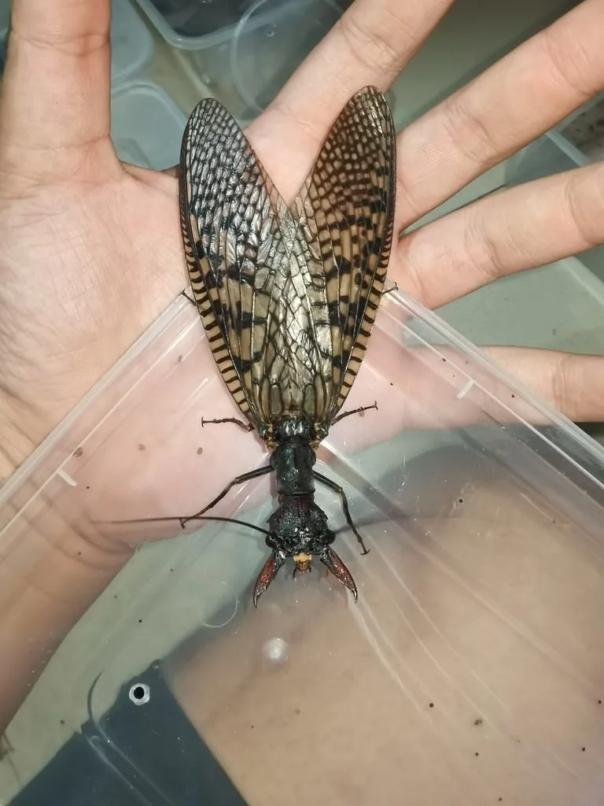

昆虫 · 动物界
巨齿蛉 Acanthacorydalis fruhstorferi

拥有巨大锯齿状上颚的水生昆虫，雄性大颚可超过体长一半，幼虫生活在清澈溪流中，是水质良好的标志物种。
- 分类
- 门节肢动物门纲昆虫纲目广翅目科齿蛉科属巨齿蛉属
- 栖息环境
- 清澈、富含氧气的山区溪流，幼虫水生，成虫在溪边活动
- 地理分布
- 中国南方及越南北部的山区溪流
- 保护级别
- 暂无评估
物种志
巨齿蛉成虫体长 40–60 mm，翅展可达 100 mm 以上，是体型很大的水生昆虫。体色黄褐或黑褐，雄性上颚特别发达，呈巨大的锯齿状，长度可达体长的一半。不过这对大颚主要用来争夺配偶，并不用于捕食。
巨齿蛉分布于中国南方及越南北部，栖息于清澈、富含氧气的山溪。幼虫水生，身体细长，捕食水生昆虫和小动物，需要 2–3 年才能完成发育；成虫多在夜间活动，寿命较短，主要任务是繁殖。幼虫对水质非常敏感，是溪流生态健康的指示物种，因此巨齿蛉的出现常被视为山溪水质良好的标志。目前它没有IUCN 的正式评估，中国未将其列入国家重点保护野生动物名录。
形态与习性
- 食性幼虫捕食水生昆虫和小动物，成虫口器主要用于争斗
- 体长40–60 mm，翅展可达 100 mm 以上
- 大颚雄性上颚呈巨大锯齿状，可达体长的一半
- 幼虫生活史幼虫水生，需 2–3 年完成发育
- 栖息地清澈、富含氧气的山区溪流
- 水质指示幼虫对水质敏感，是山溪水质良好的标志
趣味知识
- 巨齿蛉雄性的大颚可长达体长的一半，但主要用来争夺配偶，而不是捕食。
- 它的幼虫在水中生活 2–3 年，是溪流中的捕食者。
- 巨齿蛉对水质要求高，是清洁山溪的标志性昆虫。